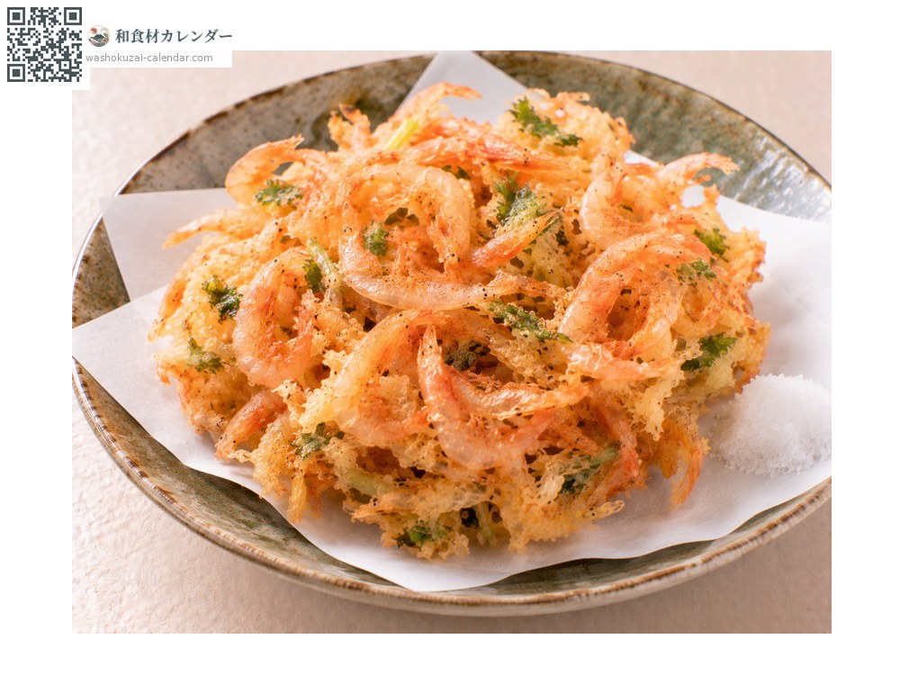
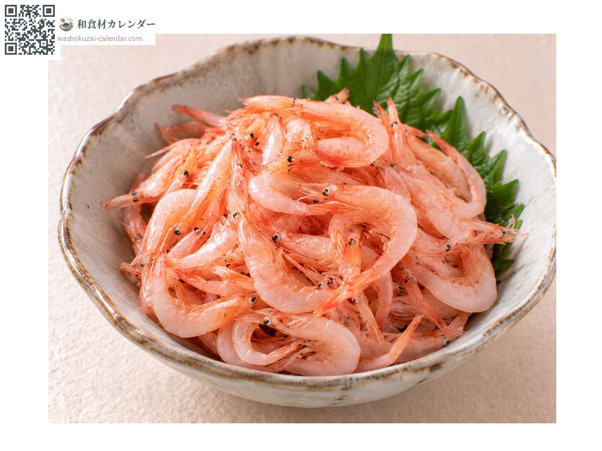
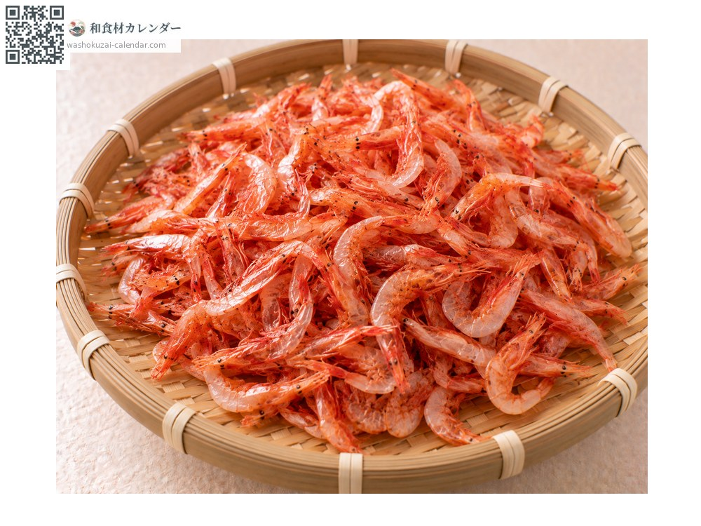
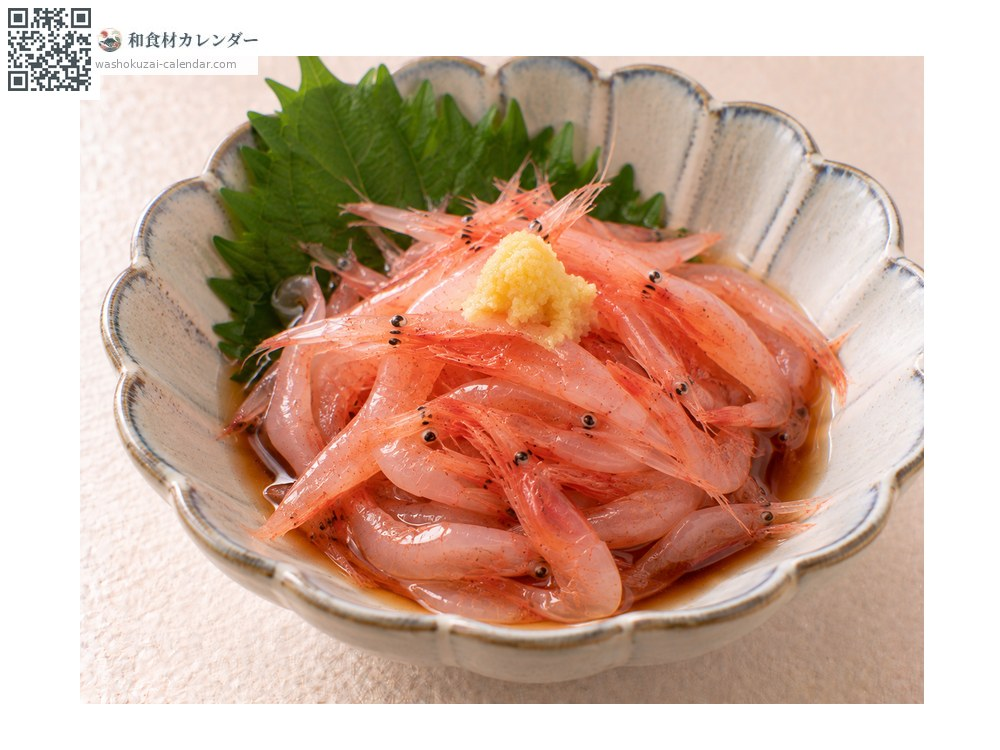

魚介
桜えび
さくらえび
旬は4月・5月・10月

旬の時期
1月
2月
3月
4月
5月
6月
7月
8月
9月
10月
11月
12月
旬出回り
調理法

かき揚げ
玉ねぎと揚げる。香ばしさが立つ。

釜揚げ
茹でたものをそのまま。ふんわりとした食感。

素干し
天日干ししたもの。炊き込みご飯や和え物に。

生食
生は産地のみ。とろりとした甘みがある。
選び方
色が鮮やかな桜色で、形が崩れていないもの。素干しは赤みが濃いもの。
保存方法
生は当日中に。釜揚げは冷蔵で2日以内。素干しは密閉して冷蔵または冷凍。
主な産地
豆知識
日本で商業的に漁獲されるのは駿河湾のみ。春と秋の年二回、資源保護のため漁期が厳格に定められている。透き通った桜色の体に発光器を持ち、水深200から300メートルの深海に生息する。